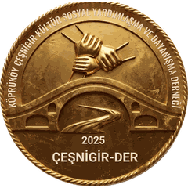

Tasarım 1
Sıcak, kilim desenli, tek uzun sayfa. Tarihçe, gezilecek yerler ve aylık takvim dahil, en ayrıntılı olanı.
Tasarım 1'i aç
Aynı içeriğin üç farklı tasarımı. Üçü de aynı yönetim panelinden güncellenir: panelden eklenen bir ilan üçünde birden görünür.
Sıcak, kilim desenli, tek uzun sayfa. Tarihçe, gezilecek yerler ve aylık takvim dahil, en ayrıntılı olanı.
Tasarım 1'i açFacebook'a benzeyen sade akış. Altta büyük sekme düğmeleri var, telefonda kullanımı en kolay olanı.
Tasarım 2'yi açKlasik bir dernek sitesi. Üstte logo ve menü, ayrı sayfalar, sıcak renkler ve büyük, okunur yazı.
Tasarım 3'ü açYönetim paneli: yonetim/